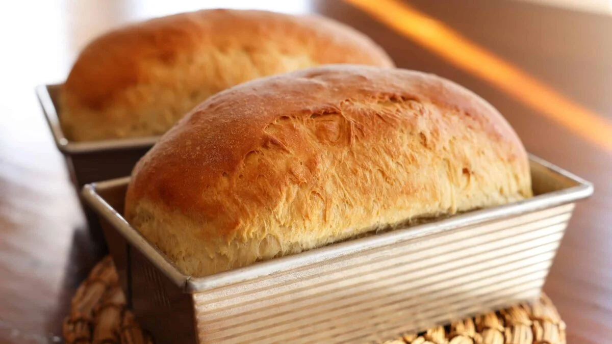

Welcome to DIY Bread Baking
Learn how to bake delicious bread at home with our step-by-step guide.
Basic Bread Ingredients
Get ready to bake with these essential ingredients:
- Bread Flour
- Water
- Yeast
- Salt
Baking Process
Follow these simple steps to bake your own bread:
- Mix ingredients
- Knead the dough
- Let the dough rise
- Shape the dough
- Bake the bread
Embedded Video
Contact Us
Have questions or need further assistance? Reach out to us!